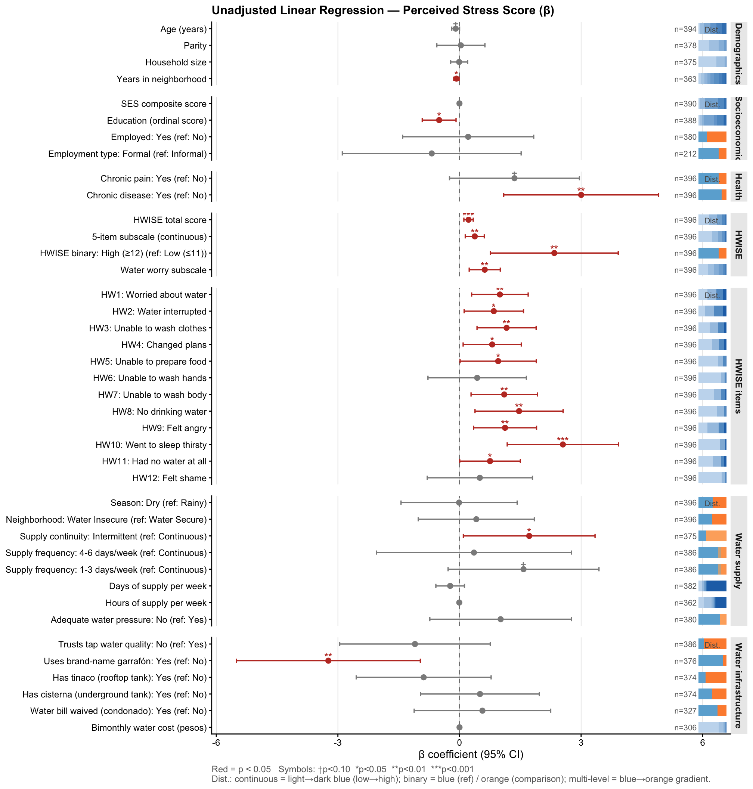
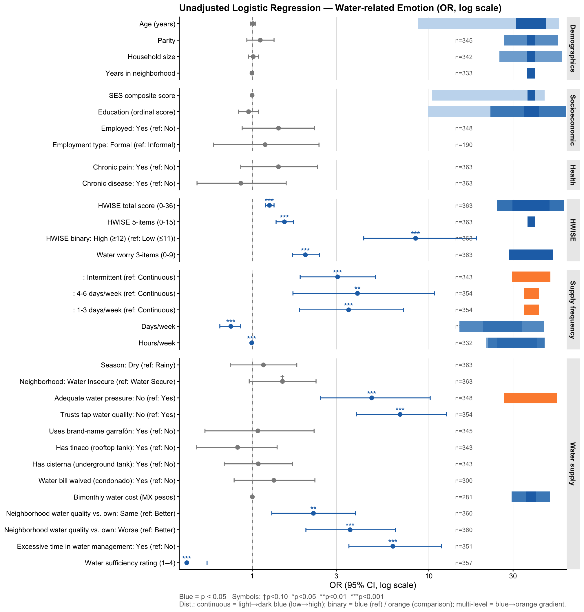

Last updated: 2026-03-29
Checks: 7 0
Knit directory: QUAIL-Mex/
This reproducible R Markdown analysis was created with workflowr (version 1.7.1). The Checks tab describes the reproducibility checks that were applied when the results were created. The Past versions tab lists the development history.
Great! Since the R Markdown file has been committed to the Git repository, you know the exact version of the code that produced these results.
Great job! The global environment was empty. Objects defined in the global environment can affect the analysis in your R Markdown file in unknown ways. For reproduciblity it’s best to always run the code in an empty environment.
The command set.seed(20241009) was run prior to running
the code in the R Markdown file. Setting a seed ensures that any results
that rely on randomness, e.g. subsampling or permutations, are
reproducible.
Great job! Recording the operating system, R version, and package versions is critical for reproducibility.
Nice! There were no cached chunks for this analysis, so you can be confident that you successfully produced the results during this run.
Great job! Using relative paths to the files within your workflowr project makes it easier to run your code on other machines.
Great! You are using Git for version control. Tracking code development and connecting the code version to the results is critical for reproducibility.
The results in this page were generated with repository version 532e4b4. See the Past versions tab to see a history of the changes made to the R Markdown and HTML files.
Note that you need to be careful to ensure that all relevant files for
the analysis have been committed to Git prior to generating the results
(you can use wflow_publish or
wflow_git_commit). workflowr only checks the R Markdown
file, but you know if there are other scripts or data files that it
depends on. Below is the status of the Git repository when the results
were generated:
Ignored files:
Ignored: .DS_Store
Ignored: .RData
Ignored: .Rhistory
Ignored: .Rproj.user/
Ignored: .claude/settings.local.json
Ignored: .claude/worktrees/
Ignored: analysis/.DS_Store
Ignored: analysis/.RData
Ignored: analysis/.Rhistory
Ignored: analysis/Hrs_by_HWISE score.png
Ignored: analysis/stacked_barplot.png
Ignored: code/.DS_Store
Ignored: data/.DS_Store
Ignored: figure/.DS_Store
Ignored: output/.DS_Store
Ignored: output/figures/.DS_Store
Ignored: output/tables/.DS_Store
Unstaged changes:
Modified: analysis/08.aim2_models.Rmd
Modified: output/figures/08.aim2_emo_forest.png
Modified: output/figures/08.aim2_pss_forest.png
Modified: output/tables/08.Tables_Aim2_Models.docx
Deleted: output/tables/08.multivariate_models.docx
Deleted: output/tables/08.multivariate_models_core.docx
Deleted: output/tables/Table_Top5_Emotion_models.docx
Deleted: output/tables/Table_Top5_PSS_models.docx
Deleted: output/tables/~$.Tables_Aim2_Models.docx
Note that any generated files, e.g. HTML, png, CSS, etc., are not included in this status report because it is ok for generated content to have uncommitted changes.
These are the previous versions of the repository in which changes were
made to the R Markdown
(analysis/06z.forest_sparklines_proto.Rmd) and HTML
(docs/06z.forest_sparklines_proto.html) files. If you’ve
configured a remote Git repository (see ?wflow_git_remote),
click on the hyperlinks in the table below to view the files as they
were in that past version.
| File | Version | Author | Date | Message |
|---|---|---|---|---|
| html | 532e4b4 | Paloma | 2026-03-29 | clean models |
| Rmd | 32f9987 | Paloma | 2026-03-29 | updated figures / plots |
| html | 32f9987 | Paloma | 2026-03-29 | updated figures / plots |
| Rmd | ce0e054 | Paloma | 2026-03-27 | homogenize formatting tables |
| html | ce0e054 | Paloma | 2026-03-27 | homogenize formatting tables |
df <- read.csv("./data/03.Merged_Q1-6_Q16_Q19_Q26_Q28.csv",
stringsAsFactors = FALSE, na.strings = c(""))
edu_levels <- c(
"No formal education", "Incomplete primary (1–5 yrs)", "Complete primary",
"Incomplete secondary (7–8 yrs)", "Complete secondary",
"Incomplete high school (10–11 yrs)", "Complete high school",
"Incomplete university (13–15 yrs)", "Complete university", "Postgraduate"
)
df_table <- df %>%
mutate(
Age = clean_for_table(D_AGE),
Yrs_in_nbhd = clean_for_table(D_LOC_TIME_CLEAN),
HH_size = clean_for_table(D_HH_SIZE),
Parity = clean_for_table(D_CHLD_CLEAN),
Season = factor(SEASON, levels = c(0, 1), labels = c("Rainy", "Dry")),
Education = factor(
dplyr::recode(as.character(SES_EDU_CAT_CLEAN),
"Incomplete primary" = "Incomplete primary (1–5 yrs)",
"Incomplete secondary" = "Incomplete secondary (7–8 yrs)",
"Incomplete high school" = "Incomplete high school (10–11 yrs)",
"Incomplete university" = "Incomplete university (13–15 yrs)"
),
levels = edu_levels, ordered = TRUE
),
SES_Score = clean_for_table(SES_SC_Total),
Edu_Score = as.numeric(Education),
Employed = factor(clean_for_table(D_EMP_CLEAN),
levels = c(0, 1), labels = c("No", "Yes")),
Employment_type = factor(clean_for_table(D_EMP_FORM_CLEAN),
levels = c(0, 1), labels = c("Informal", "Formal")),
Chronic_pain = factor(clean_for_table(HLTH_CPAIN_CAT),
levels = c(0, 1), labels = c("No", "Yes")),
Chronic_dis = factor(clean_for_table(HLTH_CDIS_CAT),
levels = c(0, 1), labels = c("No", "Yes")),
HWISE_Total = clean_for_table(HW_TOTAL),
Water_worry = clean_for_table(as.numeric(HW_WORRY_SUB)),
Water_5sub = clean_for_table(HW_MEX_5SUB),
HWISE_Hi = factor(
case_when(
is.na(clean_for_table(HW_TOTAL)) ~ NA_character_,
clean_for_table(HW_TOTAL) <= 11 ~ "Low (\u226411)",
TRUE ~ "High (\u226512)"
),
levels = c("Low (\u226411)", "High (\u226512)")
),
PSS_Total = clean_for_table(PSS_TOTAL)
)
df_water <- df %>%
mutate(
W_Continuity = case_when(
is_sentinel_str(MX3_CONT_INT) ~ NA_character_,
str_detect(tolower(MX3_CONT_INT), "^contin") ~ "Continuous",
str_detect(tolower(MX3_CONT_INT), "^intermi|cortan|deja") ~ "Intermittent",
str_detect(tolower(MX3_CONT_INT), "disminu") ~ "Reduced pressure/flow",
MX3_CONT_INT %in% c("", "N/A") | is.na(MX3_CONT_INT) ~ NA_character_,
TRUE ~ "Other"
),
W_Continuity = factor(W_Continuity,
levels = c("Continuous", "Intermittent", "Reduced pressure/flow", "Other")),
W_Freq_raw = coalesce(MX4_WFREQ, MX4_W_FREQ),
W_Frequency = case_when(
is_sentinel_str(W_Freq_raw) ~ NA_character_,
str_detect(tolower(W_Freq_raw), "^diari|every day") ~ "Daily",
str_detect(tolower(W_Freq_raw), "^intermi") ~ "Intermittent",
str_detect(tolower(W_Freq_raw), "1 a 3|1-3") ~ "1-3 days/week",
str_detect(tolower(W_Freq_raw), "4 a 6|4-6") ~ "4-6 days/week",
str_detect(tolower(W_Freq_raw), "^contin") ~ "Continuous",
W_Freq_raw %in% c("", "N/A") | is.na(W_Freq_raw) ~ NA_character_,
TRUE ~ "Other"
),
W_Frequency = factor(W_Frequency,
levels = c("Continuous", "Daily", "4-6 days/week", "1-3 days/week",
"Intermittent", "Other")),
W_Hrs_week = suppressWarnings(
ifelse(is_sentinel_str(MX5_WFREQ_HRS_PER_WEEK), NA,
as.numeric(str_extract(MX5_WFREQ_HRS_PER_WEEK, "^[0-9\\.]+")))
),
W_Hrs_week = ifelse(W_Hrs_week %in% MISSING_CODES | W_Hrs_week > 168, NA, W_Hrs_week),
W_Days_week = suppressWarnings(
ifelse(is_sentinel_str(MX5_WFREQ_NDAYS), NA,
as.numeric(str_extract(MX5_WFREQ_NDAYS, "^[0-9]+")))
),
W_Days_week = ifelse(W_Days_week %in% MISSING_CODES | W_Days_week > 7, NA, W_Days_week),
W_Pressure = case_when(
is_sentinel_str(MX6_WPRESS) ~ NA_character_,
str_detect(tolower(MX6_WPRESS), "^s[ií]|^yes|^buena|^bien") ~ "Yes",
str_detect(tolower(MX6_WPRESS), "^no|^baja|^poca") ~ "No",
MX6_WPRESS %in% c("", "N/A") | is.na(MX6_WPRESS) ~ NA_character_,
TRUE ~ "Variable"
),
W_Pressure = factor(W_Pressure, levels = c("Yes", "No", "Variable")),
W_WS_LOC_F = factor(W_WS_LOC, levels = c("WS", "WI"),
labels = c("Water Secure", "Water Insecure")),
W_Trust = factor(
case_when(is.na(MX8_TRUST_CAT) ~ NA_character_,
MX8_TRUST_CAT == 0 ~ "No", MX8_TRUST_CAT == 1 ~ "Yes",
TRUE ~ NA_character_),
levels = c("Yes", "No")),
W_Garrafon_brand = factor(
case_when(is.na(MX9_GARRAFON_BRAND) ~ NA_character_,
MX9_GARRAFON_BRAND == 1 ~ "Yes", TRUE ~ "No"),
levels = c("No", "Yes")),
W_Has_tinaco = factor(
case_when(is.na(MX10_HAS_TINACO) ~ NA_character_,
MX10_HAS_TINACO == 1 ~ "Yes", TRUE ~ "No"),
levels = c("No", "Yes")),
W_Has_cisterna = factor(
case_when(is.na(MX10_HAS_CISTERNA) ~ NA_character_,
MX10_HAS_CISTERNA == 1 ~ "Yes", TRUE ~ "No"),
levels = c("No", "Yes")),
W_Bill_waived = factor(
case_when(is.na(MX11_BILL_WAIVED) ~ NA_character_,
MX11_BILL_WAIVED == 1 ~ "Yes", TRUE ~ "No"),
levels = c("No", "Yes")),
W_Cost_2mnths = {
x <- suppressWarnings(as.numeric(as.character(MX11_COST_2MNTHS)))
ifelse(is.na(x), NA_real_, x)
},
NB_COMP = factor(
case_when(
is_sentinel_str(MX28_WQ_COMP_CAT) ~ NA_character_,
clean_for_table(MX28_WQ_COMP_CAT) == 0 ~ "Better",
clean_for_table(MX28_WQ_COMP_CAT) == 1 ~ "Same",
clean_for_table(MX28_WQ_COMP_CAT) == 2 ~ "Worse",
TRUE ~ NA_character_
),
levels = c("Better", "Same", "Worse")
),
TIME_WATER = factor(
case_when(
is_sentinel_str(MX19_TIME_CAT) ~ NA_character_,
clean_for_table(MX19_TIME_CAT) == 0 ~ "No",
clean_for_table(MX19_TIME_CAT) == 1 ~ "Yes",
TRUE ~ NA_character_
),
levels = c("No", "Yes")
),
SUFF_RATING = {
x <- suppressWarnings(as.numeric(as.character(MX16_SCEN_99)))
ifelse(is.na(x) | x %in% MISSING_CODES, NA_real_, x)
}
)
df_reg <- df_table %>%
mutate(
EMO_NEG = {
r <- suppressWarnings(as.numeric(as.character(df$MX26_EM_HHW_CAT)))
r <- ifelse(r %in% MISSING_CODES, NA, r)
case_when(r == 0 ~ 0L, r == 1 ~ 1L, TRUE ~ NA_integer_)
},
W_WS_LOC_F = df_water$W_WS_LOC_F,
W_Continuity = df_water$W_Continuity,
W_Frequency = df_water$W_Frequency,
W_Days_week = df_water$W_Days_week,
W_Hrs_week = df_water$W_Hrs_week,
W_Pressure = df_water$W_Pressure,
W_Trust = df_water$W_Trust,
W_Garrafon_brand = df_water$W_Garrafon_brand,
W_Has_tinaco = df_water$W_Has_tinaco,
W_Has_cisterna = df_water$W_Has_cisterna,
W_Bill_waived = df_water$W_Bill_waived,
W_Cost_2mnths = df_water$W_Cost_2mnths,
NB_COMP = df_water$NB_COMP,
TIME_WATER = df_water$TIME_WATER,
SUFF_RATING = df_water$SUFF_RATING
)
ref_levels <- sapply(names(df_reg), function(v) {
x <- df_reg[[v]]
if (is.factor(x)) levels(x)[1] else NA_character_
})pss_predictors <- c(
"Age", "Parity", "HH_size", "Yrs_in_nbhd",
"SES_Score", "Edu_Score", "Employed", "Employment_type",
"Chronic_pain", "Chronic_dis",
"HWISE_Total", "Water_5sub", "HWISE_Hi", "Water_worry",
"Season", "W_WS_LOC_F", "W_Continuity", "W_Frequency",
"W_Days_week", "W_Hrs_week", "W_Pressure",
"W_Trust", "W_Garrafon_brand", "W_Has_tinaco", "W_Has_cisterna",
"W_Bill_waived", "W_Cost_2mnths",
"NB_COMP", "TIME_WATER", "SUFF_RATING"
)
pss_results <- run_lm_uv("PSS_Total", pss_predictors, df_reg, pred_labels) %>%
mutate(
group = group_map[predictor],
group = factor(group, levels = group_order),
var_order = predictor_order[predictor],
display_label = mapply(make_display_label, predictor, term, label)
) %>%
arrange(group, var_order)
plot_df_pss <- pss_results %>%
mutate(
label_full = factor(display_label, levels = rev(unique(display_label))),
sig = sig_sym(p.value),
n_label = paste0("n=", n)
)Each row gets a horizontal stacked bar showing the distribution of its predictor variable, placed immediately to the right of the existing n= labels.
# ── Sparkline helper ──────────────────────────────────────────────────────────
make_spark_tiles <- function(predictor_name, label_full_val, group_val,
df_data, x_start, x_width, bins_cont = 7) {
var <- df_data[[predictor_name]]
if (is.factor(var) || is.character(var)) {
var_f <- if (is.factor(var)) var else factor(var)
tab <- table(na.omit(droplevels(var_f)))
if (length(tab) == 0) return(NULL)
props <- as.numeric(tab) / sum(tab)
n_lvl <- length(props)
pal <- if (n_lvl == 2) {
c("#6baed6", "#fd8d3c")
} else {
colorRampPalette(c("#6baed6", "#fdae6b", "#fd8d3c"))(n_lvl)
}
cuml <- c(0, cumsum(props))
} else {
vals <- na.omit(as.numeric(var))
if (length(vals) < 5) return(NULL)
h <- hist(vals, breaks = bins_cont, plot = FALSE)
props <- h$counts / sum(h$counts)
n_lvl <- length(props)
pal <- colorRampPalette(c("#c6dbef", "#2171b5"))(n_lvl)
cuml <- c(0, cumsum(props))
}
tibble(
label_full = label_full_val,
group = group_val,
x_center = x_start + (cuml[-length(cuml)] + diff(cuml) / 2) * x_width,
seg_width = diff(cuml) * x_width,
fill_color = pal
)
}
# ── Compute sparkline x positions (just right of existing n= labels) ──────────
x_max_ci <- max(plot_df_pss$conf.high, na.rm = TRUE)
x_n_label_pos <- x_max_ci * 1.08 # mirrors existing geom_text x
x_spark_start <- x_max_ci * 1.20 # small gap after n= text
x_spark_width <- x_max_ci * 0.14 # total width of the spark bar
x_axis_end <- x_spark_start + x_spark_width * 1.15 # axis limit
# ── Build tiles for every row ─────────────────────────────────────────────────
spark_df_pss <- pmap_dfr(
list(
predictor = plot_df_pss$predictor,
label_full = as.character(plot_df_pss$label_full),
group = as.character(plot_df_pss$group)
),
function(predictor, label_full, group) {
make_spark_tiles(predictor, label_full, group,
df_reg, x_spark_start, x_spark_width)
}
) %>%
mutate(
label_full = factor(label_full, levels = levels(plot_df_pss$label_full)),
group = factor(group, levels = group_order)
)p_pss_spark <- ggplot(plot_df_pss,
aes(x = estimate, y = label_full,
colour = p.value < 0.05)) +
# ── original forest layers ─────────────────────────────────────────────────
geom_vline(xintercept = 0, linetype = "dashed",
colour = "grey50", linewidth = 0.5) +
geom_errorbarh(aes(xmin = conf.low, xmax = conf.high),
height = 0.25, linewidth = 0.6) +
geom_point(size = 2.2) +
geom_text(aes(label = sig), nudge_y = 0.25, size = 3.5,
fontface = "bold", show.legend = FALSE) +
# n= label (unchanged position)
geom_text(aes(x = x_n_label_pos, label = n_label),
size = 2.8, colour = "grey40", hjust = 0) +
# ── sparkline tiles ────────────────────────────────────────────────────────
geom_tile(
data = spark_df_pss,
aes(y = label_full,
x = x_center,
fill = fill_color,
width = seg_width),
height = 0.65,
inherit.aes = FALSE
) +
# ── "Dist." header — rendered in every facet strip via geom_text on a
# small helper dataset placed at a high y value (Inf clips nicely) ──────
geom_text(
data = tibble(
group = factor(group_order, levels = group_order),
label_full = factor(NA_character_, levels = levels(plot_df_pss$label_full))
),
aes(x = x_spark_start + x_spark_width / 2, y = Inf,
label = ""),
inherit.aes = FALSE,
vjust = 1.8, size = 2.8, colour = "grey35"
) +
# ── scales & facets ────────────────────────────────────────────────────────
facet_grid(group ~ ., scales = "free_y", space = "free_y") +
scale_colour_manual(values = c("FALSE" = "grey55", "TRUE" = "#c0392b")) +
scale_fill_identity() +
scale_x_continuous(
expand = expansion(mult = c(0.05, 0)),
limits = c(NA, x_axis_end)
) +
scale_y_discrete(expand = expansion(add = 0.4)) +
labs(
title = "Unadjusted Linear Regression — Perceived Stress Score (β)",
caption = paste0(
"Red = p < 0.05 Symbols: \u2020p<0.10 *p<0.05 **p<0.01 ***p<0.001\n",
"Dist.: continuous = light\u2192dark blue (low\u2192high); ",
"binary = blue (ref) / orange (comparison); ",
"multi-level = blue\u2192orange gradient."
),
x = "\u03b2 coefficient (95% CI)",
y = NULL
) +
pub_theme +
theme(panel.spacing = unit(0.8, "lines"))
p_pss_spark
run_glm_uv <- function(outcome, predictors, data, labels) {
map_dfr(predictors, function(v) {
dat <- prep_uv_dat(outcome, v, data)
fit <- tryCatch(
glm(as.formula(paste(outcome, "~ .")), data = dat, family = binomial),
error = function(e) NULL
)
if (is.null(fit)) return(NULL)
tidy(fit, conf.int = TRUE, exponentiate = TRUE) %>%
filter(term != "(Intercept)") %>%
mutate(predictor = v, label = labels[v], AIC = AIC(fit), n = nrow(dat))
})
}
emo_predictors <- c(
"Age", "Parity", "HH_size", "Yrs_in_nbhd",
"SES_Score", "Edu_Score", "Employed", "Employment_type",
"Chronic_pain", "Chronic_dis",
"HWISE_Total", "Water_5sub", "HWISE_Hi", "Water_worry",
"Season", "W_WS_LOC_F", "W_Continuity", "W_Frequency",
"W_Days_week", "W_Hrs_week", "W_Pressure",
"W_Trust", "W_Garrafon_brand", "W_Has_tinaco", "W_Has_cisterna",
"W_Bill_waived", "W_Cost_2mnths",
"NB_COMP", "TIME_WATER", "SUFF_RATING"
)
emo_results <- run_glm_uv("EMO_NEG", emo_predictors, df_reg, pred_labels) %>%
mutate(
group = group_map[predictor],
group = factor(group, levels = group_order),
var_order = predictor_order[predictor],
display_label = mapply(make_display_label, predictor, term, label)
) %>%
arrange(group, var_order)
plot_df_emo <- emo_results %>%
mutate(
label_full = factor(display_label, levels = rev(unique(display_label))),
sig = sig_sym(p.value),
n_label = paste0("n=", n)
)# Axis bounds: 90th / 5th percentile of CI limits to prevent sparse-cell blow-up
ci_hi_layout <- quantile(
plot_df_emo$conf.high[is.finite(plot_df_emo$conf.high)], 0.90, na.rm = TRUE)
ci_lo_layout <- quantile(
plot_df_emo$conf.low[plot_df_emo$conf.low > 0 & is.finite(plot_df_emo$conf.low)],
0.05, na.rm = TRUE)
log_max_emo <- log10(ci_hi_layout)
log_min_emo <- log10(ci_lo_layout)
x_axis_start_emo <- 10^(log_min_emo - 0.10)
x_n_label_pos_emo <- 10^(log_max_emo + 0.10) # just right of clipped CI bars
# Spark bars: fixed visual width (log_bar_width log10-units) regardless of OR scale
log_bar_start <- log_max_emo + 0.28 # bar left edge on log scale
log_bar_width <- 0.35 # fixed visual width for all rows
x_axis_end_emo <- 10^(log_bar_start + log_bar_width + 0.08)
# geom_rect needs explicit ymin/ymax; ggplot2 assigns integer positions to
# factor levels starting at 1 (level 1 = y=1, etc.)
y_pos_emo <- setNames(
seq_along(levels(plot_df_emo$label_full)),
levels(plot_df_emo$label_full)
)
make_spark_rects <- function(predictor_name, y_pos, df_data,
l_start, l_width, bins_cont = 7) {
var <- df_data[[predictor_name]]
if (is.factor(var) || is.character(var)) {
var_f <- if (is.factor(var)) var else factor(var)
tab <- table(na.omit(droplevels(var_f)))
if (length(tab) == 0) return(NULL)
props <- as.numeric(tab) / sum(tab)
n_lvl <- length(props)
pal <- if (n_lvl == 2) c("#6baed6", "#fd8d3c") else
colorRampPalette(c("#6baed6", "#fdae6b", "#fd8d3c"))(n_lvl)
cuml <- c(0, cumsum(props))
} else {
vals <- na.omit(as.numeric(var))
if (length(vals) < 5) return(NULL)
h <- hist(vals, breaks = bins_cont, plot = FALSE)
props <- h$counts / sum(h$counts)
n_lvl <- length(props)
pal <- colorRampPalette(c("#c6dbef", "#2171b5"))(n_lvl)
cuml <- c(0, cumsum(props))
}
tibble(
xmin = 10^(l_start + cuml[-length(cuml)] * l_width),
xmax = 10^(l_start + cuml[-1] * l_width),
ymin = y_pos - 0.325,
ymax = y_pos + 0.325,
fill_color = pal
)
}
spark_rect_emo <- pmap_dfr(
list(
predictor = plot_df_emo$predictor,
y_pos = unname(y_pos_emo[as.character(plot_df_emo$label_full)])
),
function(predictor, y_pos) {
make_spark_rects(predictor, y_pos, df_reg, log_bar_start, log_bar_width)
}
)p_emo_spark <- ggplot(plot_df_emo,
aes(x = estimate, y = label_full,
colour = p.value < 0.05)) +
geom_vline(xintercept = 1, linetype = "dashed",
colour = "grey50", linewidth = 0.5) +
geom_errorbarh(aes(xmin = conf.low, xmax = conf.high),
height = 0.25, linewidth = 0.6) +
geom_point(size = 2.2) +
geom_text(aes(label = sig), nudge_y = 0.25, size = 3.5,
fontface = "bold", show.legend = FALSE) +
geom_text(aes(x = x_n_label_pos_emo, label = n_label),
size = 2.8, colour = "grey40", hjust = 0) +
geom_rect(
data = spark_rect_emo,
aes(xmin = xmin, xmax = xmax, ymin = ymin, ymax = ymax, fill = fill_color),
inherit.aes = FALSE
) +
facet_grid(group ~ ., scales = "free_y", space = "free_y") +
scale_colour_manual(values = c("FALSE" = "grey55", "TRUE" = "#2171b5")) +
scale_fill_identity() +
scale_x_log10(
expand = expansion(mult = c(0, 0)),
limits = c(x_axis_start_emo, x_axis_end_emo)
) +
scale_y_discrete(expand = expansion(add = 0.4)) +
labs(
title = "Unadjusted Logistic Regression — Water-related Emotion (OR, log scale)",
caption = paste0(
"Blue = p < 0.05 Symbols: \u2020p<0.10 *p<0.05 **p<0.01 ***p<0.001\n",
"Dist.: continuous = light\u2192dark blue (low\u2192high); ",
"binary = blue (ref) / orange (comparison); ",
"multi-level = blue\u2192orange gradient."
),
x = "OR (95% CI, log scale)",
y = NULL
) +
pub_theme +
theme(panel.spacing = unit(0.8, "lines"))
p_emo_spark
sessionInfo()R version 4.5.3 (2026-03-11)
Platform: aarch64-apple-darwin20
Running under: macOS Tahoe 26.3.1
Matrix products: default
BLAS: /Library/Frameworks/R.framework/Versions/4.5-arm64/Resources/lib/libRblas.0.dylib
LAPACK: /Library/Frameworks/R.framework/Versions/4.5-arm64/Resources/lib/libRlapack.dylib; LAPACK version 3.12.1
locale:
[1] C.UTF-8/C.UTF-8/C.UTF-8/C/C.UTF-8/C.UTF-8
time zone: America/Detroit
tzcode source: internal
attached base packages:
[1] stats graphics grDevices utils datasets methods base
other attached packages:
[1] ggplot2_4.0.0 broom_1.0.12 purrr_1.0.4 stringr_1.5.1 tidyr_1.3.1
[6] dplyr_1.2.0
loaded via a namespace (and not attached):
[1] gtable_0.3.6 jsonlite_2.0.0 compiler_4.5.3 promises_1.3.2
[5] tidyselect_1.2.1 Rcpp_1.0.14 git2r_0.36.2 later_1.4.2
[9] jquerylib_0.1.4 textshaping_1.0.0 systemfonts_1.3.2 scales_1.4.0
[13] yaml_2.3.10 fastmap_1.2.0 R6_2.6.1 labeling_0.4.3
[17] generics_0.1.3 workflowr_1.7.1 knitr_1.50 backports_1.5.0
[21] tibble_3.2.1 rprojroot_2.1.1 RColorBrewer_1.1-3 bslib_0.9.0
[25] pillar_1.10.2 rlang_1.1.7 cachem_1.1.0 stringi_1.8.7
[29] httpuv_1.6.16 xfun_0.52 S7_0.2.0 fs_1.6.6
[33] sass_0.4.10 cli_3.6.5 withr_3.0.2 magrittr_2.0.3
[37] grid_4.5.3 digest_0.6.37 lifecycle_1.0.5 vctrs_0.7.1
[41] evaluate_1.0.3 glue_1.8.0 farver_2.1.2 whisker_0.4.1
[45] ragg_1.4.0 rmarkdown_2.30 tools_4.5.3 pkgconfig_2.0.3
[49] htmltools_0.5.8.1